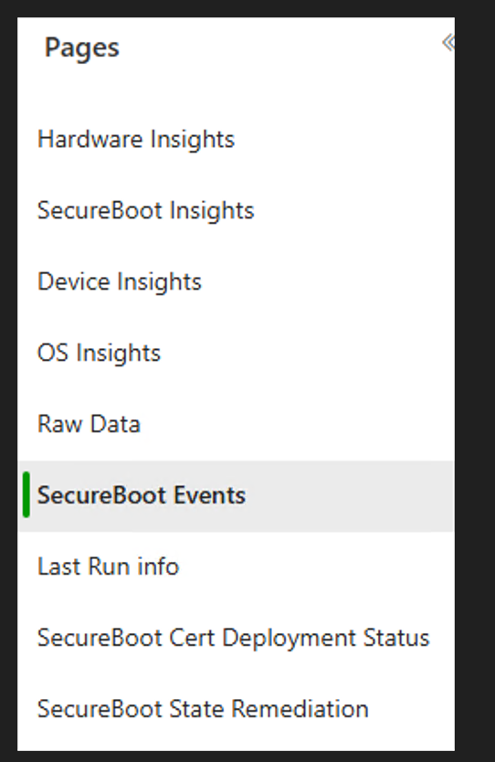
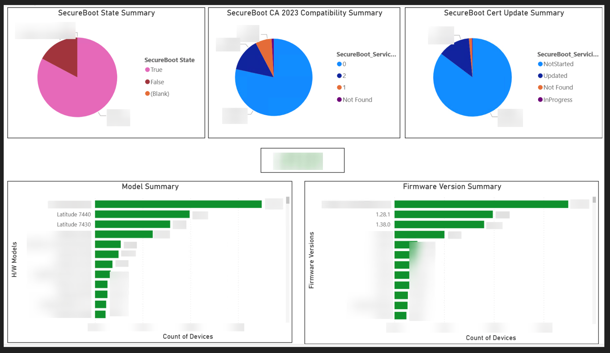
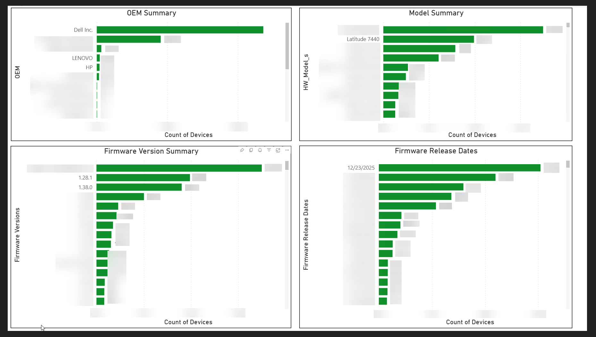
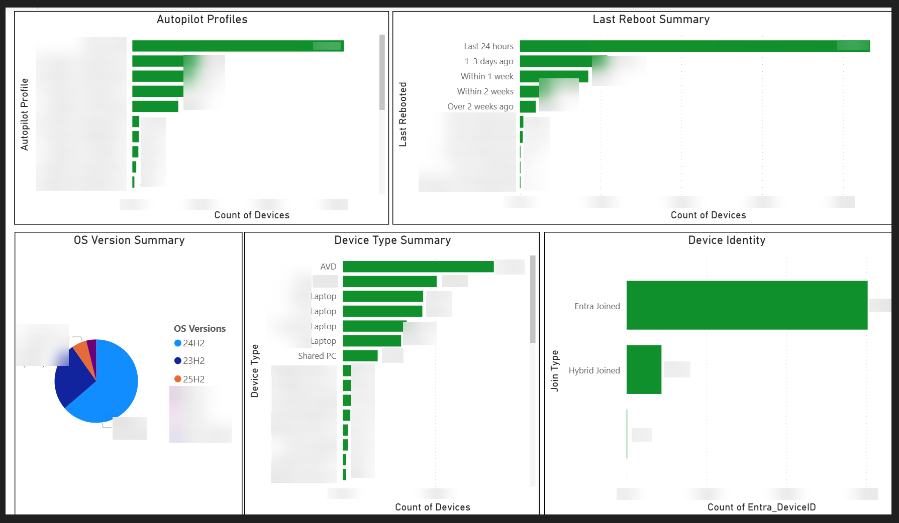
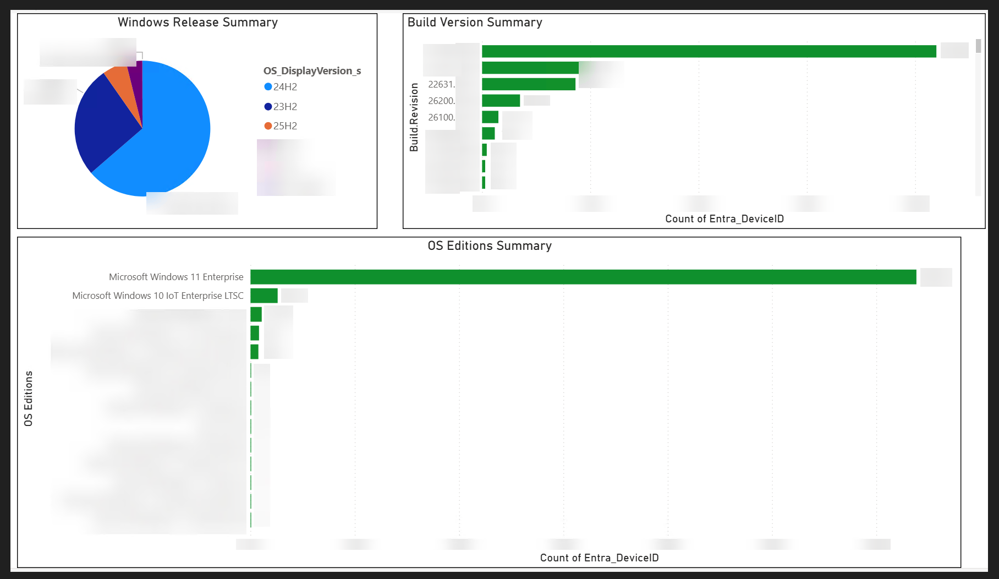
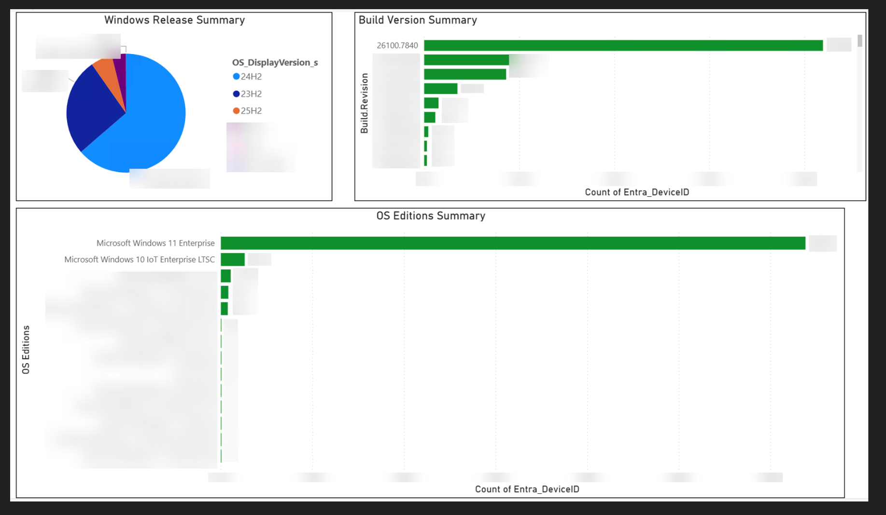
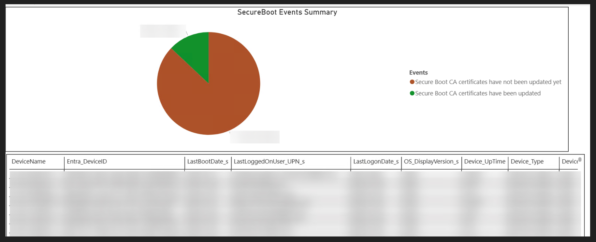
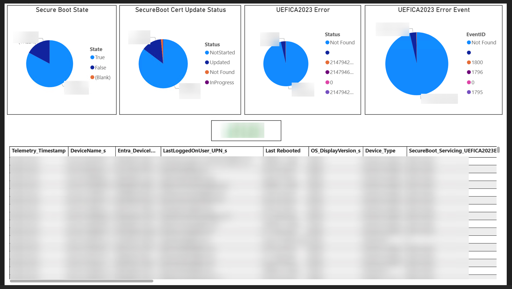
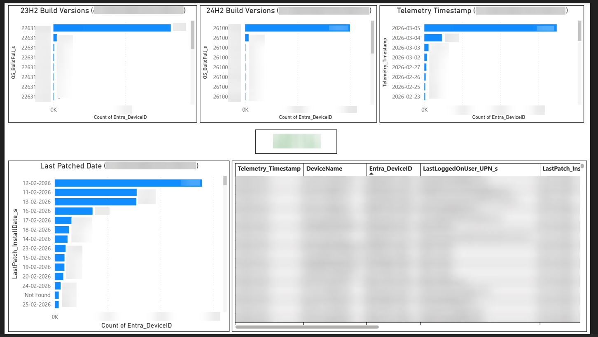

A comprehensive, field-tested guide to data gathering, governance, and deployment strategy for the Secure Boot certificate transition — from telemetry collection to PowerBI insights and production rollout.
Microsoft has announced that the Secure Boot certificates originally provisioned in 2011 will expire in June 2026. This affects virtually every Windows device in enterprise environments and demands proactive preparation. The transition to the new 2023 certificates is not a simple patch — it requires thorough understanding of your hardware landscape, firmware readiness, and a deliberate governance-driven rollout plan.
If your organization has not started preparing, you are already behind. The Microsoft 2011 Secure Boot CA certificate expires in June 2026. Devices that haven't been updated will fail to boot trusted code signed with newer certificates, potentially causing significant operational disruption.
This blog is the result of extensive hands-on work preparing thousands of enterprise devices for this transition. I am sharing the complete approach — from initial discovery scripts to PowerBI governance dashboards and the final registry-based deployment method — so that other IT professionals and organizations can benefit from a proven, production-tested playbook.
The following official sources were instrumental in building this approach:
Secure Boot is a security feature built into the UEFI (Unified Extensible Firmware Interface) firmware specification. It establishes a chain of trust from the moment a device powers on through to the operating system kernel loading. Its purpose is straightforward but critical: ensure that only trusted, cryptographically signed code is executed during the boot process.
The Secure Boot trust chain relies on several certificate databases stored in UEFI firmware:
| Database | Full Name | Purpose |
|---|---|---|
| PK | Platform Key | The root of trust. Typically set by the OEM. Authorizes changes to the KEK database. |
| KEK | Key Exchange Key | Authorizes updates to the DB and DBX. Microsoft provisions a KEK to allow Windows to manage the trust chain. |
| DB | Signature Database (Allow) | Contains trusted certificates and hashes. Boot loaders signed by certificates in DB are allowed to execute. |
| DBX | Forbidden Signature Database | Contains revoked certificates and hashes. Anything matching DBX is blocked from execution — even if present in DB. |
When a Windows device boots with Secure Boot enabled, the firmware checks each component in the boot chain — the bootloader (bootmgfw.efi), the kernel, and early-load drivers — against the DB and DBX. Windows relies on the Microsoft Windows UEFI CA certificate in the DB to validate its boot components. The KEK certificate allows Microsoft and the OEM to update these databases through Windows Update or manual deployment.
In today's threat landscape, attackers increasingly target the pre-OS boot environment. Bootkits and firmware-level malware like BlackLotus have demonstrated that compromising the boot chain gives an adversary persistent, nearly invisible access that survives OS reinstalls and even disk replacements. Secure Boot is the frontline defense against these attacks.
With the rise of AI-powered attack techniques and sophisticated supply chain threats, maintaining a verified boot chain is no longer a "nice to have" — it's foundational to Zero Trust architecture. Many compliance frameworks (including conditional access policies in Microsoft Entra) increasingly require Secure Boot as a device health attestation signal.
If the legacy 2011 certificates expire without the updated 2023 certificates being applied:
Microsoft is replacing three critical Secure Boot certificates that were originally provisioned in 2011 with their 2023 successors. These certificates span the KEK database and the Signature Database (DB), and together they form the complete trust chain that Windows and third-party UEFI applications rely on during boot.
| Component | Database | Legacy (2011) | New (2023) |
|---|---|---|---|
| Key Exchange Key | KEK | CN=Microsoft Corporation KEK CA 2011 | CN=Microsoft Corporation KEK 2K CA 2023 |
| Windows UEFI CA | DB | CN=Microsoft Windows Production PCA 2011 | CN=Microsoft Windows UEFI CA 2023 |
| Third-Party UEFI CA | DB | CN=Microsoft Corporation UEFI CA 2011 | CN=Microsoft UEFI CA 2023 |
Each of these three certificates serves a distinct role in the Secure Boot trust chain. The KEK certificate is what authorizes Microsoft to update the DB and DBX databases on your devices — without a valid KEK, Windows cannot add new trusted signatures or revoke compromised ones, effectively freezing your security posture. The Windows UEFI CA is the certificate that validates the Windows boot loader, kernel, and early-load drivers — it is the reason Windows is allowed to boot at all on a Secure Boot-enabled device. The Third-Party UEFI CA validates non-Windows UEFI applications, drivers, and Option ROMs — this includes hardware add-in card firmware (network adapters, storage controllers, GPUs), third-party bootloaders (e.g., Linux shim), and other UEFI-signed components. If any of these three certificates expire without being replaced, the corresponding trust chain breaks.
The certificate update process involves writing the new certificates to the UEFI firmware's KEK and DB databases. This is a firmware-level change and requires a device reboot to apply. Microsoft has built servicing mechanisms into Windows to facilitate this, but the process is not automatic for IT-managed devices — organizations must explicitly enable the update.
Before deploying certificate updates at scale, you need to thoroughly understand your environment. This is not a "click and pray" situation. Each of the following areas can be a blocker.
Not all devices in your environment may have Secure Boot enabled. Legacy deployments, BIOS-based imaging, or manual overrides can leave Secure Boot turned off. Devices with Secure Boot disabled cannot receive certificate updates.
Your fleet likely spans multiple OEMs (Dell, Lenovo, HP, etc.), dozens of models, and varying firmware versions. Each OEM has published minimum firmware requirements for Secure Boot certificate compatibility. A device on an old firmware version may not support the update — or worse, may brick during the process.
Even within the same model family, firmware versions can vary wildly across your fleet. OEM-specific BIOS/UEFI updates are a prerequisite in many cases. Microsoft has published OEM-specific guidance pages that map model families to minimum supported firmware versions.
Microsoft provides several registry-based signals that indicate whether a device is ready for the certificate update:
WindowsUEFICA2023Capable — Whether the device's servicing stack considers it compatible (values: 0, 1, 2)ConfidenceLevel — Microsoft's assessment of update confidence (High Confidence, Needs More Data, Unknown)UEFICA2023Status — Current update status (NotStarted, InProgress, Updated)Windows logs specific events to track the certificate update lifecycle:
| Event ID | Meaning |
|---|---|
| 1800 | Pending reboot — the certificate update has been staged and is waiting for a restart to apply. Typically seen after the first reboot. |
| 1801 | Certificates are available but not yet applied. Contains confidence level and diagnostic information. |
| 1808 | Certificates have been successfully updated in firmware. This is the reliable success indicator. |
| Others | Various error and status codes documented in Microsoft's event reference |
The cornerstone of this entire approach is collecting the right data directly from the source of truth — the devices themselves. Rather than relying on potentially stale data from Intune device records, SCCM, or third-party tools, I built a custom telemetry collection pipeline that reads directly from each device's registry, firmware, event logs, and system APIs.
The deployment model uses a single Intune Platform Script that serves as a wrapper. This script:
.ps1 fileThis single-script approach was chosen deliberately over packaging as an Intune Win32 Application. It could have been done using Intune Detection Scripts, but due to the 200 script limit for Intune Detection Scripts, I prefer this method which keeps headroom for detection scripts needed for other purposes in the future. The Platform Script approach is simpler to maintain and deploy.
The solution consists of two scripts working together: a Main Script (the Scheduled Task wrapper) and an Audit Script (the telemetry collector embedded within). This modular design makes the framework reusable far beyond Secure Boot — the Main Script can embed any PowerShell script that needs to run as a scheduled task on managed devices.
The Main Script is a self-contained Intune Platform Script that handles deployment, execution, and scheduling. It creates a persistent local folder, writes the embedded secondary script to disk, executes it once during deployment, and registers a daily Scheduled Task running as SYSTEM with highest privileges. If the scheduled time is missed (e.g., device was off), it runs as soon as the device is available.
All behavior is controlled through configurable values at the top of the script:
| Parameter | Purpose |
|---|---|
$TaskName | Display name for the Scheduled Task in Task Scheduler |
$TaskPath | Task Scheduler folder path (must start and end with \) |
$DestinationFolder | Local folder where the embedded script is written |
$SecondaryScriptFileName | Filename for the embedded script on disk |
$DailyRunTime | Scheduled execution time in 24-hour HH:mm format |
$RunSecondaryOnceNow | Whether to execute the embedded script immediately during deployment |
$ExecutionPolicy | PowerShell execution policy for both one-time and scheduled runs |
$UseNoProfile / $HiddenWindow | Silent, profile-free execution for background operation |
$AllowOnBatteries / $DontStopOnBatteries | Ensures task runs on laptops regardless of power state |
$EnableLog / $LogPath | Local deployment logging for troubleshooting |
$FailInstallIfSecondaryFails | Controls whether a non-zero exit from the embedded script fails the Intune install |
The Main Script is designed as a generic scheduled-task deployment vehicle. By replacing the content within the $SecondaryScriptContent here-string, you can deploy any PowerShell script as a daily scheduled task via Intune — compliance checks, inventory collectors, configuration enforcers, log shippers, or any other scenario that requires recurring device-level execution under SYSTEM context. The scheduling, logging, battery behavior, and idempotent task registration logic are all handled for you.
The Audit Script is the payload embedded within the Main Script for this Secure Boot use case. It is a comprehensive device posture collector that gathers 45+ data points across Secure Boot readiness, hardware/firmware, identity, OS, patching, and reboot health. It runs under SYSTEM context, ensuring access to all necessary registry keys, UEFI firmware variables, and system APIs without user interaction.
Key configurable values within the Audit Script's $Config hashtable:
| Parameter | Purpose |
|---|---|
WorkspaceId / SharedKey / LogType | Azure Log Analytics workspace credentials and custom table name |
LocalMode / LocalModeSendToLA | Toggle between CSV-only, Log Analytics-only, or both |
CsvPath / CsvFileName | Local CSV export location for validation and offline use |
LocalLogRoot / LocalLogFilePrefix | Per-run log file location for device-level troubleshooting |
PreferRdpIdentityForLastLoggedOnUser | Enable RDP/AVD identity fallback for VDI environments |
DeviceTypeRules | Configurable array of naming convention rules to classify device types |
Desired | Explicit pass/fail criteria for the OverallStatus assessment |
MaxEventsToScan / SecurityLogMaxEventsToScan | Event log scan depth controls to balance thoroughness vs. performance |
WuaHistoryMaxItems / WuaHistoryTimeoutSec | WUA history read guardrails to avoid hangs on some devices |
The complete scripts are open-sourced on GitHub:
The audit script collects an extensive set of data points from each device. Every field is designed to answer a specific question about readiness, health, or remediation status. Here is a breakdown of the key telemetry categories:
The table below is the complete reference of every field collected by the audit script, organized by category. This is derived directly from the script's output schema — every row sent to Log Analytics or written to CSV contains all of these columns.
| Field | Source | Purpose |
|---|---|---|
DeviceName | $env:COMPUTERNAME | Hostname identification |
DateOfExecution | Script execution date (yyyy-MM-dd) | When the telemetry was collected (date only) |
ClientLocalTime | Script execution local time | Full local date/time of collection (yyyy-MM-dd HH:mm:ss) |
TimeGeneratedUtc | UTC timestamp (ISO 8601) | Log Analytics time-generated field for accurate ingestion ordering |
| Field | Source | Purpose |
|---|---|---|
Entra_DeviceID | dsregcmd /status | Unique Entra device identifier for correlation with Intune/Entra data |
Device_AutopilotProfile | Registry: Provisioning\Diagnostics\Autopilot | Autopilot deployment profile name |
Device_Type | Configurable naming convention rules (Initials/Suffix match) | Classify by use case (Laptop, AVD, Kiosk, Shared PC, etc.) — most-specific rules win |
Device_UpTime | Calculated: execution time minus LastBootDateTime | Hours since last reboot — flags devices that haven't rebooted |
Device_Identity_JoinType | dsregcmd /status | Entra Joined, Hybrid Joined, Domain Joined, or Workgroup |
LastLoggedOnUser | LogonUI registry + CIM fallback | Last logged-on user (NTID or best-effort display). Intune primary user is not always reliable (e.g., Kiosks, Shared Devices) |
LastLoggedOnUser_UPN | LogonUI + IdentityStore cache + Security 4624 LogonType 10 fallback (for VDI/AVD) | User Principal Name — helps understand who exactly is logging on the device |
LastLoggedOnUserSid | LogonUI registry (LastLoggedOnUserSID) | SID for authoritative identity resolution and 4624 correlation |
LastLogonDate | Security 4624 (primary) → Win32_NetworkLoginProfile → Win32_UserProfile (fallbacks) | Date of last interactive logon |
LastLogonTimestamp | Same multi-source approach as above | Full date/time of last interactive logon |
LastLogonSource | Determined by which source provided the logon data | Indicates whether logon came from Security4624, Win32_NetworkLoginProfile, or Win32_UserProfile |
| Field | Source | Purpose |
|---|---|---|
OS_Edition | Win32_OperatingSystem.Caption | Full OS edition (e.g., Microsoft Windows 11 Enterprise, Windows 10 IoT Enterprise LTSC) |
OS_DisplayVersion | Registry: CurrentVersion\DisplayVersion | OS release caption (e.g., 24H2, 25H2, 23H2) |
OS_Build | Registry: CurrentVersion\CurrentBuildNumber | Major build number (e.g., 26200) |
OS_BuildFull | CurrentBuildNumber.UBR | Full build revision (e.g., 26200.7628) — indicates patch currency |
| Field | Source | Purpose |
|---|---|---|
LastBootDate | Win32_OperatingSystem.LastBootUpTime | Date of last reboot (yyyy-MM-dd) |
LastBootTime | Win32_OperatingSystem.LastBootUpTime | Time of last reboot (HH:mm:ss) |
LastPatch_InstallDate | CBS Package_for_RollupFix (authoritative) | Authoritative install date of the latest cumulative update |
LastPatch_ReleaseInfo | Derived from CBS install time | Patch release period (e.g., 2026-02) |
LastPatch_KB | WUA history enrichment (filters Defender/SSU/.NET/MSRT/Preview/OOB) | KB number of the last cumulative patch |
LastPatch_BuildRevision | CurrentBuildNumber.UBR from registry | Running OS build revision — this is what the device is actually on right now |
LastPatch_Caption | WUA history enrichment | Full title of the last cumulative update (e.g., "2026-02 Update (KB5052000) (26200.7628)") |
| Field | Source | Purpose |
|---|---|---|
HW_OEM | SecureBoot\Servicing\DeviceAttributes\OEMManufacturerName | OEM Manufacturer (Dell Inc., LENOVO, HP, etc.) |
HW_Model_Family | SecureBoot\Servicing\DeviceAttributes\OEMModelSystemFamily | Model family for grouping (e.g., Latitude) |
HW_Model | SecureBoot\Servicing\DeviceAttributes\OEMModelNumber | Specific model number (e.g., Latitude 7440) |
HW_SKU | SecureBoot\Servicing\DeviceAttributes\OEMModelSKU | Model SKU for further granularity |
HW_FirmwareVersion | SecureBoot\Servicing\DeviceAttributes\FirmwareVersion | Current BIOS/UEFI firmware version — critical for OEM minimum version checks |
HW_FirmwareReleaseDate | SecureBoot\Servicing\DeviceAttributes\FirmwareReleaseDate | When the running firmware was released |
Microsoft's OEM compatibility pages specify minimum firmware versions required for safe Secure Boot certificate updates. A device running an outdated firmware may fail the update or, in worst-case scenarios, encounter boot issues. This telemetry lets you cross-reference your fleet against OEM requirements before deployment.
| Field | Source | Purpose |
|---|---|---|
SecureBoot_Status | Confirm-SecureBootUEFI / SecureBoot\State registry | Is Secure Boot enabled? (True/False) |
SecureBoot_AvailableUpdates | HKLM:\...\SecureBoot\AvailableUpdates | Registry value indicating if the update trigger has been deployed (e.g., 22852 = 0x5944) |
SecureBoot_Servicing_ConfidenceLevel | SecureBoot\Servicing\ConfidenceLevel | Microsoft's confidence assessment for the device |
SecureBoot_Servicing_CertStatus | SecureBoot\Servicing\UEFICA2023Status | Current update status: NotStarted, InProgress, or Updated |
SecureBoot_Servicing_CertUpdate_Compatibility | SecureBoot\Servicing\WindowsUEFICA2023Capable | Compatibility level: 0 = not capable, 1 = partially capable, 2 = fully capable |
SecureBoot_Servicing_UEFICA2023Error | SecureBoot\Servicing\UEFICA2023Error | Error code if the certificate update failed |
SecureBoot_Servicing_UEFICA2023ErrorEvent | SecureBoot\Servicing\UEFICA2023ErrorEvent | Associated error event ID for troubleshooting |
| Field | Source | Purpose |
|---|---|---|
SecureBoot_Cert_Legacy | Get-UEFICertificate -Type KEK (reads firmware directly) | Subject of the legacy 2011 KEK certificate (Shout out to Richard Hicks) |
SecureBoot_Cert_Desc_Legacy | Same — Issuer field from X.509 cert | Issuer/description of the legacy certificate |
SecureBoot_Cert_Expiry_Legacy | Same — NotAfter field from X.509 cert | Expiration date of the legacy 2011 certificate |
SecureBoot_Cert_Current | Get-UEFICertificate -Type KEK (reads firmware directly) | Subject of the new 2023 KEK certificate. Does not imply certificates have been applied — checks firmware presence |
SecureBoot_Cert_Desc_Current | Same — Issuer field from X.509 cert | Issuer/description of the 2023 certificate |
SecureBoot_Cert_Expiry_Current | Same — NotAfter field from X.509 cert | Expiration date of the new 2023 certificate |
| Field | Source | Purpose |
|---|---|---|
SecureBoot_CertUpdate_Events_1801 | System Event Log (latest Event ID 1801) | Full message retained — "Certs available but not applied" content with diagnostics, unless otherwise |
SecureBoot_CertUpdate_Events_1801_TimeStamp | System Event Log | When the latest 1801 event was logged |
SecureBoot_CertUpdate_Events_1801_Confidence | Parsed from 1801 message body | Confidence level: High Confidence, Needs More Data, Unknown, Paused, or Blank |
SecureBoot_CertUpdate_Events_1808 | System Event Log (latest Event ID 1808) | "Secure Boot CA certificates have been updated" or "...have not been updated yet" — the reliable success indicator |
SecureBoot_CertUpdate_Events_1808_TimeStamp | System Event Log | When the certificate update completed |
| Field | Source | Purpose |
|---|---|---|
OverallStatus | Computed from configurable $Config.Desired criteria | "All checks passed" or "Need Attention (field_1, field_2)" — lists every failing column for targeted remediation |
The script computes an OverallStatus field based on explicit criteria you define in the configuration:
$Config.Desired = [ordered]@{ SecureBoot_Status = $true SecureBoot_Servicing_CertStatus = "Updated" SecureBoot_Servicing_CertUpdate_Compatibility = "2" SecureBoot_Cert_Current = "CN=Microsoft Corporation KEK 2K CA 2023, ..." }
If all criteria pass, the status is "All checks passed". Otherwise, it reports "Need Attention" with the specific failing columns, making remediation targeting straightforward.
Before ingesting data at scale into Log Analytics, thorough validation is essential:
Run the script in LocalMode = $true to generate a CSV file. Open it in Excel and verify that all rows, columns, and values are populated as expected. This catches formatting issues, missing data, and unexpected values before they hit your log workspace.
Configure Log Analytics ingestion and run the script on a single device. Verify the data appears in your custom table in Log Analytics with correct schema and values. Check that timestamps, booleans, and string fields are all properly typed.
Run the script manually on a small set of production devices (representing different OEMs, models, and configurations). Validate the ingested data against what you can physically verify on those machines.
With telemetry flowing into Azure Log Analytics, the next step is transforming raw data into actionable governance dashboards. I imported the Log Analytics data into Power BI using the MQuery (Kusto) method, which allows direct querying of the Log Analytics workspace from Power BI.
The Power BI report is organized into multiple focused pages, each addressing a different dimension of readiness and deployment tracking:


This is the primary governance view. At a glance, you can see what percentage of your fleet has Secure Boot enabled, how many devices are compatible with the 2023 CA update, and the current deployment progress. The model and firmware breakdowns below help identify which hardware segments need firmware updates before certificate deployment.

Understanding your hardware landscape is essential. This dashboard reveals OEM distribution (Dell, Lenovo, HP, etc.), the most common models, and critically, the spread of firmware versions and their release dates. Devices running firmware released before a certain date may need BIOS updates before the Secure Boot certificate update can proceed safely.

This page surfaces operational health indicators that directly affect Secure Boot readiness. The Last Reboot Summary is particularly important: devices that haven't rebooted recently won't complete the certificate update (which requires two reboots). The Device Type breakdown helps prioritize deployment rings — you may want to start with standard laptops before tackling shared devices, kiosks, or AVD instances.



This is the deployment progress tracker. The Event 1808 indicator is the definitive signal that a device has completed the certificate update. Over time, the green slice should grow until it encompasses your entire fleet.


After thorough data collection, insight building, and prerequisite verification, the actual deployment is surprisingly straightforward. Based on extensive testing across multiple hardware models and configurations, the registry-based method has proven to be the most reliable approach for deploying the Secure Boot certificate updates.
The simplest and most reliable method to trigger the Secure Boot certificate update is setting a single registry value:
Here is the complete deployment script:
# ================== CONFIG ================== $RegPath = "HKLM:\SYSTEM\CurrentControlSet\Control\SecureBoot" $ValueName = "AvailableUpdates" $HexValue = 0x5944 # ============================================ # Ensure registry path exists if (-not (Test-Path $RegPath)) { New-Item -Path $RegPath -Force | Out-Null } # Set DWORD value New-ItemProperty -Path $RegPath -Name $ValueName ` -PropertyType DWord -Value $HexValue -Force | Out-Null
This script can be deployed via Intune as a Platform Script, a Remediation Script, or any other deployment mechanism your organization uses.
Once the registry configuration is deployed, the device will require two reboots to complete the certificate update process. However, critically:
After deployment, the progress can be monitored through the following registry values and events:
| Indicator | Location / Event | What It Tells You |
|---|---|---|
| UEFICA2023Status | SecureBoot\Servicing registry | NotStarted → InProgress → Updated |
| UEFICA2023Error | SecureBoot\Servicing registry | Error code if the update fails (anything other than 0 or blank needs investigation) |
| UEFICA2023ErrorEvent | SecureBoot\Servicing registry | Associated error event for troubleshooting |
| Event 1808 | System Event Log | Definitive confirmation: "Secure Boot CA certificates have been updated" |
| KEK Certificate | Get-UEFICertificate -Type KEK | Presence of "KEK 2K CA 2023" in firmware confirms physical update |
All of these indicators are captured by the daily audit script, flowing into Log Analytics and surfacing in the Power BI dashboards. This creates a closed-loop governance model where you can track deployment progress in near-real-time without manual device checks.
Preparing an enterprise environment for the Microsoft Secure Boot certificate expiration is not just about setting a registry value. It's about building a comprehensive understanding of your device landscape and establishing governance that extends well beyond this single event.
The telemetry and insights framework built for this project enables ongoing governance across several dimensions:
While the preparation is extensive, the actual deployment mechanism is elegantly simple:
AvailableUpdates = 0x5944 at HKLM:\SYSTEM\CurrentControlSet\Control\SecureBootThe registry-based method has been the most reliable in my testing, and the process works exactly as Microsoft has documented. The key to success is thorough preparation, not the deployment itself.
If your organization hasn't started this process, begin immediately. There is significant lead time needed for data collection, firmware remediation, testing across all hardware models, and phased rollout. June 2026 will arrive faster than you think.
| Resource | Link |
|---|---|
| Act now: Secure Boot certificates expire in June 2026 | Windows IT Pro Blog |
| Secure Boot Certificate updates: Guidance for IT professionals | Microsoft Support |
| Secure Boot DB and DBX variable update events | Microsoft Support |
| Intune method for Secure Boot IT-managed updates | Microsoft Support |
| Registry key updates for Secure Boot | Microsoft Support |
| OEM pages for Secure Boot | Microsoft Support |
| Dell Secure Boot Certificate Expiration | Dell Support |
| Trusted Launch for Azure VMs | Microsoft Learn |
| Secure Boot (Richard M. Hicks Consulting) | richardhicks.com |
Special thanks to Richard Hicks for the Get-UEFICertificate script that reads KEK certificates directly from firmware, which is integrated within the audit script used in this guide.